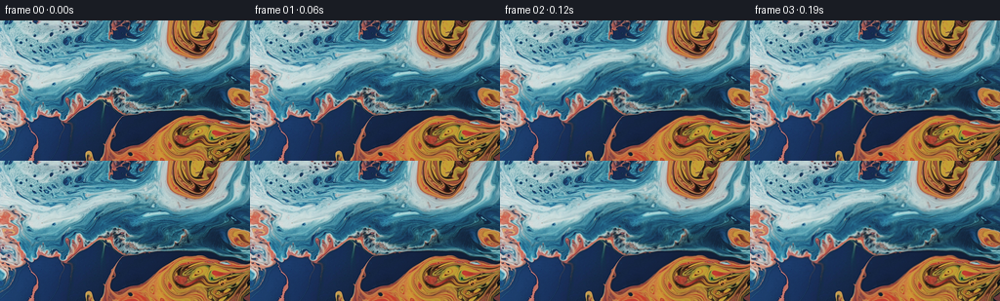

候选 01 · 2026-11-08T23:03:34.898694+00:00 · 点开播放与检查图
inspection.png

transition_check.png

代码变化
--- 上一保存版本
+++ 本次保存版本
@@ -0,0 +1,144 @@
+"""Animate the provided macro liquid photograph using smooth material transport.
+No learned components: incompressible stream-function flow, capillary waves,
+cubic RGB resampling and restrained moving surface illumination.
+"""
+from pathlib import Path
+import json
+import numpy as np
+from PIL import Image, ImageFilter
+import artifact_io
+
+ROOT = Path(__file__).resolve().parent
+
+
+def cubic_weight(z):
+ a = np.abs(z)
+ return np.where(a <= 1, 1.5*a**3 - 2.5*a**2 + 1,
+ np.where(a < 2, -.5*a**3 + 2.5*a**2 - 4*a + 2, 0))
+
+
+def resample(im, x, y):
+ """Interpolating cubic kernel, evaluated against the original, never frames."""
+ h, w = im.shape[:2]
+ x = np.clip(x, 0, w-1)
+ y = np.clip(y, 0, h-1)
+ ix = np.floor(x).astype(np.int32)
+ iy = np.floor(y).astype(np.int32)
+ fx, fy = x-ix, y-iy
+ out = np.zeros((*x.shape, im.shape[2]), np.float32)
+ for j in (-1, 0, 1, 2):
+ wy = cubic_weight(fy-j).astype(np.float32)
+ yy = np.clip(iy+j, 0, h-1)
+ row = np.zeros_like(out)
+ for i in (-1, 0, 1, 2):
+ wx = cubic_weight(fx-i).astype(np.float32)
+ row += im[yy, np.clip(ix+i, 0, w-1)] * wx[..., None]
+ out += row * wy[..., None]
+ return out
+
+
+def raw_velocity(x, y, w, h):
+ """u=psi_y, v=-psi_x. Closed edges keep the macro composition intact."""
+ kx, ky = np.pi/(w-1), np.pi/(h-1)
+ sx, sy = np.sin(kx*x), np.sin(ky*y)
+ bx, by = sx*sx, sy*sy
+ dbx = kx*np.sin(2*kx*x)
+ dby = ky*np.sin(2*ky*y)
+ p = np.zeros_like(x)
+ px = np.zeros_like(x)
+ py = np.zeros_like(x)
+ # A broad roll transports the blue/orange boundary; smaller eddies deform it.
+ for cx, cy, rad, strength in [(126, 66, 68, -700),
+ (194, 115, 36, 325),
+ (189, 22, 28, 205),
+ (39, 80, 31, -155)]:
+ dx, dy = x-cx, y-cy
+ q = strength*np.exp(-(dx*dx + dy*dy)/(2*rad*rad))
+ p += q
+ px -= q*dx/(rad*rad)
+ py -= q*dy/(rad*rad)
+ ax, ay = 2*kx*x+.4, ky*y-.3
+ p += 135*np.sin(ax)*np.sin(ay)
+ px += 270*kx*np.cos(ax)*np.sin(ay)
+ py += 135*ky*np.sin(ax)*np.cos(ay)
+ return bx*(dby*p+by*py), -by*(dbx*p+bx*px)
+
+
+def generate():
+ spec = json.loads((ROOT/'task_spec.json').read_text())
+ original = np.asarray(Image.open(ROOT/'first_frame.png').convert('RGB'))
+ h, w = original.shape[:2]
+ assert (w, h) == (spec['width'], spec['height'])
+ source = original.astype(np.float32)
+ blurred = np.asarray(Image.fromarray(original).filter(ImageFilter.GaussianBlur(1.6)), dtype=np.float32)
+ # Carry fine reflective ridges with the pigment instead of generating noise.
+ stacked = np.concatenate((source, source-blurred), axis=2)
+ yy, xx = np.mgrid[0:h, 0:w].astype(np.float32)
+ uu, vv = raw_velocity(xx, yy, w, h)
+ speed = np.sqrt(uu*uu+vv*vv)
+ flow_scale = 7.8 / np.percentile(speed, 99.5)
+ mx, my = xx.copy(), yy.copy()
+ frames = [original.copy()]
+ times = np.arange(spec['frames'])/spec['fps']
+ last_flow_time = 0.0
+ diagnostics = []
+ envelope = .36 + .64*np.sin(np.pi*xx/(w-1))*np.sin(np.pi*yy/(h-1))
+ phase1 = .059*xx + .087*yy
+ phase2 = -.051*xx + .107*yy + 1.2
+ phase3 = .167*xx + .121*yy + .7
+ for index, t in enumerate(times[1:], 1):
+ # Exact inverse trajectories of a stationary, smooth, incompressible flow.
+ flow_time = t - .30*(1-np.exp(-t/.60))
+ dt = -(flow_time-last_flow_time)/3
+ for _ in range(3):
+ u, v = raw_velocity(mx, my, w, h)
+ hx, hy = mx+.5*dt*flow_scale*u, my+.5*dt*flow_scale*v
+ u, v = raw_velocity(hx, hy, w, h)
+ mx += dt*flow_scale*u
+ my += dt*flow_scale*v
+ last_flow_time = flow_time
+ # Wavelength-separated traveling surface ripples, continuous at t=0.
+ wave1 = np.sin(phase1-1.40*t)-np.sin(phase1)
+ wave2 = np.sin(phase2+1.66*t)-np.sin(phase2)
+ wave3 = np.sin(phase3-2.44*t)-np.sin(phase3)
+ dx = envelope*(1.35*wave1 + .48*wave2 + .24*wave3)
+ dy = envelope*(-.88*wave1 + .85*wave2 + .22*wave3)
+ # Vanishing normal displacement at edges, tangential ripples retained.
+ dx *= np.sin(np.pi*xx/(w-1))
+ dy *= np.sin(np.pi*yy/(h-1))
+ x, y = mx+dx, my+dy
+ sampled = resample(stacked, x, y)
+ rgb, detail = sampled[..., :3], sampled[..., 3:]
+ brightness = (.2126*rgb[..., 0]+.7152*rgb[..., 1]+.0722*rgb[..., 2])
+ sheen = np.clip((brightness-30)/125, 0, 1)
+ slope = (.55*(np.cos(phase1-1.40*t)-np.cos(phase1)) +
+ .30*(np.cos(phase2+1.66*t)-np.cos(phase2)))
+ # A low-amplitude change in reflected light, not a global color shift.
+ rgb *= (1 + .026*sheen*slope)[..., None]
+ ridge_light = .075*np.sin(.083*xx-.074*yy-1.13*t)*np.sin(.9*t)
+ rgb += detail*ridge_light[..., None]
+ frames.append(np.clip(np.rint(rgb), 0, 255).astype(np.uint8))
+ if index in [1, 16, 40, 80]:
+ gx_x = np.gradient(x, axis=1)
+ gx_y = np.gradient(x, axis=0)
+ gy_x = np.gradient(y, axis=1)
+ gy_y = np.gradient(y, axis=0)
+ jac = gx_x*gy_y-gx_y*gy_x
+ diagnostics.append({'frame': index,
+ 'mean_displacement': float(np.mean(np.hypot(x-xx, y-yy))),
+ 'max_displacement': float(np.max(np.hypot(x-xx, y-yy))),
+ 'jacobian_min': float(jac.min()),
+ 'jacobian_max': float(jac.max())})
+ frames = np.stack(frames)
+ assert frames.dtype == np.uint8
+ assert frames.shape == (81, 144, 256, 3)
+ assert np.array_equal(frames[0], original)
+ (ROOT/'motion_diagnostics.json').write_text(json.dumps(diagnostics, indent=2))
+ artifact_io.save(frames, ROOT)
+ dif = np.abs(np.diff(frames.astype(np.float32), axis=0))
+ print('Saved', frames.shape, 'frame differences mean:', dif.mean(axis=(1, 2, 3))[[0, 15, 39, 79]])
+ print(json.dumps(diagnostics, indent=2))
+
+
+if __name__ == '__main__':
+ generate()
命令 3 · 2026-11-08T23:02:12.025462+00:00/bin/bash -lc "python - <<'PY'
import numpy as np
from PIL import Image
im=np.array(Image.open('first_frame.png').convert('RGB')).astype(float)
a=np.asarray(Image.fromarray(im.astype('uint8')).resize((64,36))).astype(float)
print('Color map: O=orange, o=muted orange, B=blue, b=cyan, .=light cyan, +=light grey')
for row in a:
s=''
for r,g,b in row:
if r>b*1.35 and r>g*1.12: c='O' if r>130 else 'o'
elif r>b*1.08:c='o'
elif b>r*1.65:c='B' if g<100 else 'b'
elif b>r*1.2:c='b'
elif g>170:c='.'
else:c='+'
s+=c
print(s)
# gradient statistics
for name,rg in [('all',(0,144,0,256)),('bright',(0,50,0,150)),('dark',(100,144,20,120)),('orange',(110,144,180,256))]:
y0,y1,x0,x1=rg;q=im[y0:y1,x0:x1]; print(name,'diff',np.mean(np.abs(np.diff(q,axis=0))),np.mean(np.abs(np.diff(q,axis=1))), 'std',q.std((0,1)))
PY"exit 0 命令 4 · 2026-11-08T23:03:30.684401+00:00/bin/bash -lc "cat > generate.py <<'PY'
\"\"\"Animate the provided macro liquid photograph using smooth material transport.
No learned components: incompressible stream-function flow, capillary waves,
cubic RGB resampling and restrained moving surface illumination.
\"\"\"
from pathlib import Path
import json
import numpy as np
from PIL import Image, ImageFilter
import artifact_io
ROOT = Path(__file__).resolve().parent
def cubic_weight(z):
a = np.abs(z)
return np.where(a <= 1, 1.5*a**3 - 2.5*a**2 + 1,
np.where(a < 2, -.5*a**3 + 2.5*a**2 - 4*a + 2, 0))
def resample(im, x, y):
\"\"\"Interpolating cubic kernel, evaluated against the original, never frames.\"\"\"
h, w = im.shape[:2]
x = np.clip(x, 0, w-1)
y = np.clip(y, 0, h-1)
ix = np.floor(x).astype(np.int32)
iy = np.floor(y).astype(np.int32)
fx, fy = x-ix, y-iy
out = np.zeros((*x.shape, im.shape[2]), np.float32)
for j in (-1, 0, 1, 2):
wy = cubic_weight(fy-j).astype(np.float32)
yy = np.clip(iy+j, 0, h-1)
row = np.zeros_like(out)
for i in (-1, 0, 1, 2):
wx = cubic_weight(fx-i).astype(np.float32)
row += im[yy, np.clip(ix+i, 0, w-1)] * wx[..., None]
out += row * wy[..., None]
return out
def raw_velocity(x, y, w, h):
\"\"\"u=psi_y, v=-psi_x. Closed edges keep the macro composition intact.\"\"\"
kx, ky = np.pi/(w-1), np.pi/(h-1)
sx, sy = np.sin(kx*x), np.sin(ky*y)
bx, by = sx*sx, sy*sy
dbx = kx*np.sin(2*kx*x)
dby = ky*np.sin(2*ky*y)
p = np.zeros_like(x)
px = np.zeros_like(x)
py = np.zeros_like(x)
# A broad roll transports the blue/orange boundary; smaller eddies deform it.
for cx, cy, rad, strength in [(126, 66, 68, -700),
(194, 115, 36, 325),
(189, 22, 28, 205),
(39, 80, 31, -155)]:
dx, dy = x-cx, y-cy
q = strength*np.exp(-(dx*dx + dy*dy)/(2*rad*rad))
p += q
px -= q*dx/(rad*rad)
py -= q*dy/(rad*rad)
ax, ay = 2*kx*x+.4, ky*y-.3
p += 135*np.sin(ax)*np.sin(ay)
px += 270*kx*np.cos(ax)*np.sin(ay)
py += 135*ky*np.sin(ax)*np.cos(ay)
return bx*(dby*p+by*py), -by*(dbx*p+bx*px)
def generate():
spec = json.loads((ROOT/'task_spec.json').read_text())
original = np.asarray(Image.open(ROOT/'first_frame.png').convert('RGB'))
h, w = original.shape[:2]
assert (w, h) == (spec['width'], spec['height'])
source = original.astype(np.float32)
blurred = np.asarray(Image.fromarray(original).filter(ImageFilter.GaussianBlur(1.6)), dtype=np.float32)
# Carry fine reflective ridges with the pigment instead of generating noise.
stacked = np.concatenate((source, source-blurred), axis=2)
yy, xx = np.mgrid[0:h, 0:w].astype(np.float32)
uu, vv = raw_velocity(xx, yy, w, h)
speed = np.sqrt(uu*uu+vv*vv)
flow_scale = 7.8 / np.percentile(speed, 99.5)
mx, my = xx.copy(), yy.copy()
frames = [original.copy()]
times = np.arange(spec['frames'])/spec['fps']
last_flow_time = 0.0
diagnostics = []
envelope = .36 + .64*np.sin(np.pi*xx/(w-1))*np.sin(np.pi*yy/(h-1))
phase1 = .059*xx + .087*yy
phase2 = -.051*xx + .107*yy + 1.2
phase3 = .167*xx + .121*yy + .7
for index, t in enumerate(times[1:], 1):
# Exact inverse trajectories of a stationary, smooth, incompressible flow.
flow_time = t - .30*(1-np.exp(-t/.60))
dt = -(flow_time-last_flow_time)/3
for _ in range(3):
u, v = raw_velocity(mx, my, w, h)
hx, hy = mx+.5*dt*flow_scale*u, my+.5*dt*flow_scale*v
u, v = raw_velocity(hx, hy, w, h)
mx += dt*flow_scale*u
my += dt*flow_scale*v
last_flow_time = flow_time
# Wavelength-separated traveling surface ripples, continuous at t=0.
wave1 = np.sin(phase1-1.40*t)-np.sin(phase1)
wave2 = np.sin(phase2+1.66*t)-np.sin(phase2)
wave3 = np.sin(phase3-2.44*t)-np.sin(phase3)
dx = envelope*(1.35*wave1 + .48*wave2 + .24*wave3)
dy = envelope*(-.88*wave1 + .85*wave2 + .22*wave3)
# Vanishing normal displacement at edges, tangential ripples retained.
dx *= np.sin(np.pi*xx/(w-1))
dy *= np.sin(np.pi*yy/(h-1))
x, y = mx+dx, my+dy
sampled = resample(stacked, x, y)
rgb, detail = sampled[..., :3], sampled[..., 3:]
brightness = (.2126*rgb[..., 0]+.7152*rgb[..., 1]+.0722*rgb[..., 2])
sheen = np.clip((brightness-30)/125, 0, 1)
slope = (.55*(np.cos(phase1-1.40*t)-np.cos(phase1)) +
.30*(np.cos(phase2+1.66*t)-np.cos(phase2)))
# A low-amplitude change in reflected light, not a global color shift.
rgb *= (1 + .026*sheen*slope)[..., None]
ridge_light = .075*np.sin(.083*xx-.074*yy-1.13*t)*np.sin(.9*t)
rgb += detail*ridge_light[..., None]
frames.append(np.clip(np.rint(rgb), 0, 255).astype(np.uint8))
if index in [1, 16, 40, 80]:
gx_x = np.gradient(x, axis=1)
gx_y = np.gradient(x, axis=0)
gy_x = np.gradient(y, axis=1)
gy_y = np.gradient(y, axis=0)
jac = gx_x*gy_y-gx_y*gy_x
diagnostics.append({'frame': index,
'mean_displacement': float(np.mean(np.hypot(x-xx, y-yy))),
'max_displacement': float(np.max(np.hypot(x-xx, y-yy))),
'jacobian_min': float(jac.min()),
'jacobian_max': float(jac.max())})
frames = np.stack(frames)
assert frames.dtype == np.uint8
assert frames.shape == (81, 144, 256, 3)
assert np.array_equal(frames[0], original)
(ROOT/'motion_diagnostics.json').write_text(json.dumps(diagnostics, indent=2))
artifact_io.save(frames, ROOT)
dif = np.abs(np.diff(frames.astype(np.float32), axis=0))
print('Saved', frames.shape, 'frame differences mean:', dif.mean(axis=(1, 2, 3))[[0, 15, 39, 79]])
print(json.dumps(diagnostics, indent=2))
if __name__ == '__main__':
generate()
PY
OPENBLAS_NUM_THREADS=1 python generate.py"exit 0